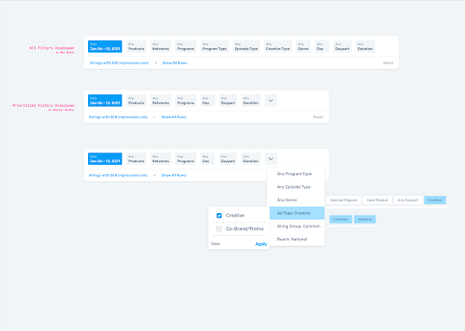
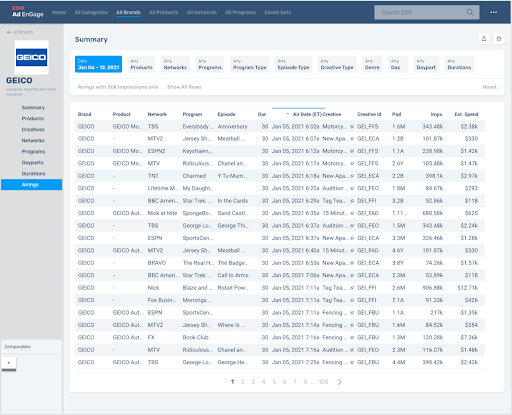
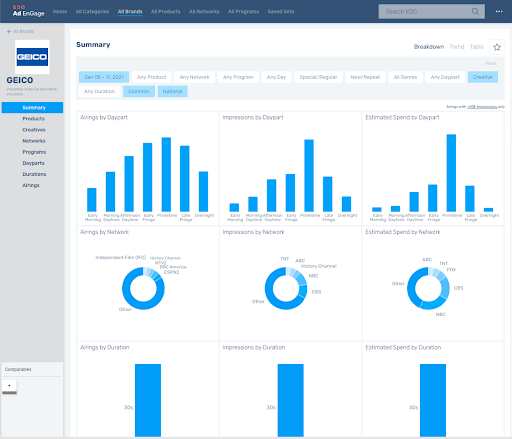

Rebuilding the query controls of a TV‑analytics dashboard — so pre‑configured views could scale and untrained users could finally see what they were looking at.
The new version of EDO's analytics dashboard inherited its query controls wholesale from version 1. They had served well when users set every query parameter themselves — but broke down as a solution once pre‑configured parameters were being set on the user's behalf.
The product was simultaneously investing in a new suite of as‑needed guidance and pre‑configured views. With more — and more varied — query filters on the roadmap, we needed a foundation for adaptive presentation and control.


